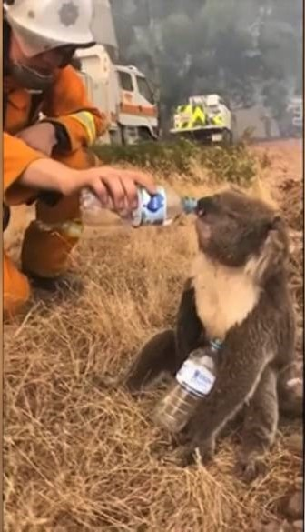

How to water koloas
A lot of heartwarming post on social media has been shared of good samaritans rescuing and giving water to thirsty koalas fleeing from the devastating wild fires that have ravaged Australia from the past weeks.
But how come this innocent gesture to help an distressed animal can prove fatal.
Koalas live in eucalyptus trees where they eat the leaves of the trees and the leaves are called gumleaves. Gum Leaves are very fibrous and have low nutrition value so it takes a lot of energy to digest the leaves. The koalas teeth are adapted to chew the leaves and so they get all the nutrition and water from mere leaves. Koalas rarely need to drink water but when they need to they drink with their face down to lap water like how a dog would drink.
But with the Australian forests on fire the koalas limited habitat is burning down and they are forced to flee to man's civilization to search for a safe haven. During normal circumstances koalas don’t interact with the man but now they need to in order to survive, a lot of them escape with minor burn damage but the people that find them don’t know how to handle them. Koalas that flee from the fires are very distressed and thirsty so they can drink too fast if you pour water from above.